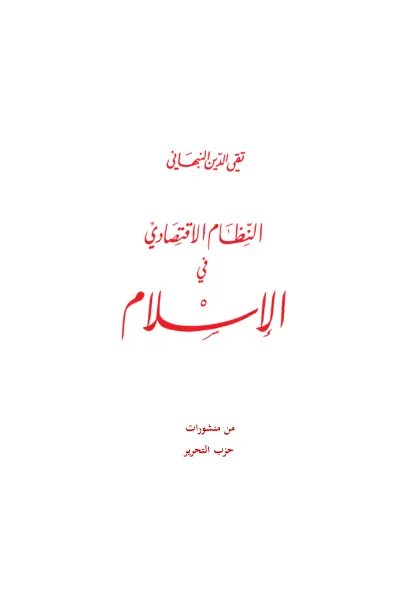

النظام الاقتصادي في الإسلام
The Economic System of Islam
Baca The Economic System of Islam (النظام الاقتصادي في الإسلام) karya Taqiyuddin an-Nabhani secara gratis di Maktabah Ilmu: teks Arab, Indonesia, Inggris. Tanpa daftar, tanpa iklan.
Buka kitab iniLihat lemari ilmuDaftar isi
- Introduction
- Introduction to Economic System (1)
- Introduction to Economic System (2)
- Introduction to Economic System (3)
- Economy
- The Basis of the Economic System
- The View of Islam towards the Economy
- Economic Policy in Islam
- The General Economic Principles
- Types of Ownership
- Definition of Private Ownership
- Defintion of Ownership
- The Means of Owning Property
- The First Means of Ownership: Work (Amal
- Extraction of Earth’s Elements
- Hunting
- Brokerage and Commission Agency (Samsara and Dalala)
- Joint Venture (Mudharaba)
- Share Cropping (Musaqat)
- Employing an Employee (Worker)
- The Work of the Employee (Worker)
- The Type of Work
- Duration of the Work
- The Effort Spent in the Work
- The Ruling of Hiring Non-Muslims
- Hiring someone to perform Worships and Public Services
- Who is an Employee?
- Estimating the Employee's Wage
- The Second Means of Ownership: Inheritance
- The Third Means of Ownership: The Need for Funds for Sustenance
- The Fourth Means of Ownership: State Funds Granted to Citzens
- The Fifth Means of Ownership: The Property obtained by Individuals without exchanging Labour or Money
- The Way to Dispense of Funds
- The Rules of Lands
- Cultivation of Barren Land
- Disposal of Land
- Prohibiting the Leasing of Land
- Trading and Manufacturing
- Manufacturing
- The Laws of Partnership (Companies)
- The Company of Equal (Al-'Inan)
- The Company of Bodies (Al-Abdan)
- Joint Venture (Mudharaba) [Company of Body and Capital]
- The Company of Reputation Faces (Wujooh)
- Company of Negotiation (Mufawadha)
- Dissolving the Company
- Capitalist Companies
- Joint-Stock Company (Share Companies)
- Shares of the Share Stock Company
- Co-operative Societies
- Insurance (Ta'meen)
- The Prohibited Methods of Increasing Ownership
- Interest/Usury (Riba)
- Criminal Fraud
- Deceit in Trade
- Monopoly
- Price-Fixing (Tas'eer)
- Right of Dispensation to Spend in Gifts and Maintenance
- Poverty (Al-Faqr)
- Public Property (Al-Milkiyyah Al- Ammah)
… dan 33 bab lainnya.